1.3.3. Tables
The tool-bar of the content-editor contains following buttons that allow the creation and editing of tables:
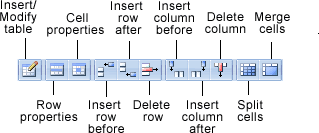
Figure 1.3.27. Table buttons
Place the cursor at the position within the content, where the table shall be inserted and click the "Insert/modify table" button (). This opens the table properties dialog:
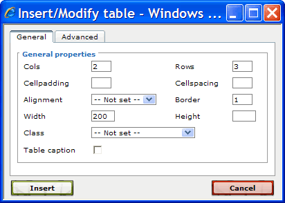
Figure 1.3.28. Table properties dialog
As an example, we create a table with two columns and three rows. Furthermore, the table shall have a fixed width of 200 pixels and a border-width of 1 pixel. Therefore enter the values as shown in the dialog above. Optionally you can also edit any of the other properties. See "Editing content" in the Reference Manual for more information. Finally click the "Insert" button to create the table.
The created table is initially empty. You can now place the cursor within a cell and enter some content.
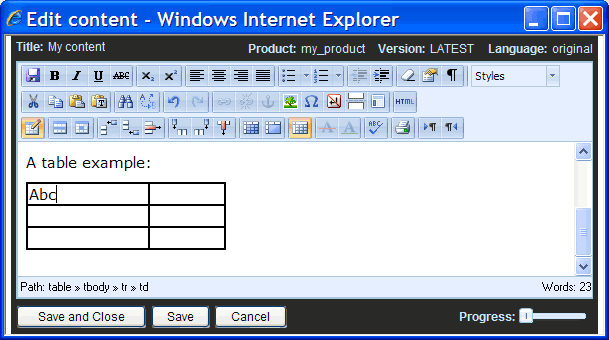
Figure 1.3.29. Editing a table
To modify the table properties after you have created the table, place the cursor within a table-cell or select the table by clicking the table-border and then click the "Insert/modify table" button again.
As a next step we will define the cells in the first row to be header cells. Therefore place the cursor in a cell of the first row and click the "Table cell properties" button. A dialog is opened that allows you to edit the cell properties:
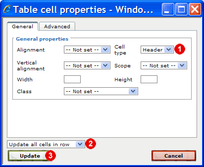
Figure 1.3.30. Defining table cells as header
Change the cell type from "Data" to "Header" . Because the change shall be applied to all cells of the currently selected row (i.e. the row defined by the current cursor position), choose "Update all cells in row" from the listbox above the "Update" button. Finally click the "Update" button to apply the changes. By default the text within header cells is bold and centered, as shown in the screenshot below.
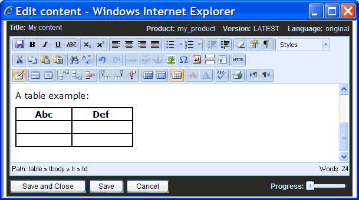
Figure 1.3.31. Table with header cells
You can modify the default style by changing the predefined "table_header" style. To do this, save the changed content and close the content-editor by clicking the "Save and Close" button in the bottom-panel of the content-editor. Then switch to the "Styles" workspace:
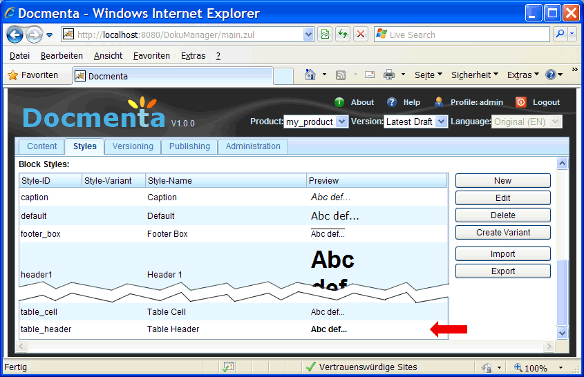
Figure 1.3.32. The table_header style
The "Styles" workspace contains two lists: the "Inline Styles" and the "Block Styles" list. Select the entry with Style-ID "table_header" from the "Block Styles" list (a block-style defines the style-properties of a complete block, e.g. a paragraph or in this case a table cell), and click the "Edit" button. Alternatively you can double click the list entry. This opens the style-dialog:
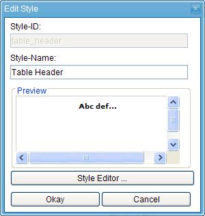
Figure 1.3.33. The style dialog
Click the "Style Editor ..." button to open the CSS style-editor. In this dialog you can define CSS properties (as specified by the W3 consortium). Switch to the "Background" tab and enter the background color value "#e1e1e1" (grey). You can also choose the color from a color-picker dialog by clicking on the color-preview field next to the input field.
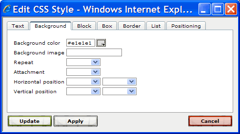
Figure 1.3.34. Setting the background-color of the style
Click the "Update" button to close the CSS style-editor. Then click the "Okay" button of the style-dialog to save the changes and to close the dialog.
Switch back to the "Content" workspace. The preview-area should still display the preview of the content-node with the previously inserted table:
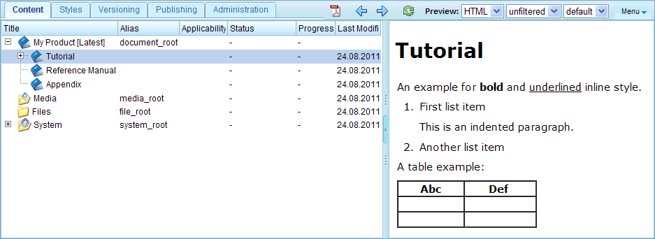
Figure 1.3.35. Preview of the table
You may notice that the header of the table does not have a grey background-color yet, although we have changed the "table_header" style. You first have to refresh the preview-area to get a preview with the updated style. You can refresh the preview-area by clicking the "Reload" button () in the "Content" workspace toolbar.
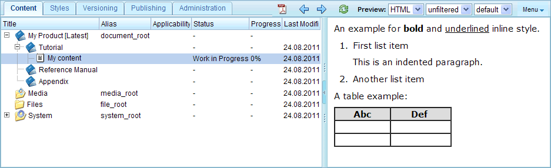
Figure 1.3.36. Refreshed preview of table
A table can also have a caption line. To add a caption line, select the table and click the "Insert/modify table" button. In the opened dialog check the "Table caption" checkbox and click "Update" to close the dialog. The table will then have a caption line, which you can edit in the content-editor (see screenshot below).
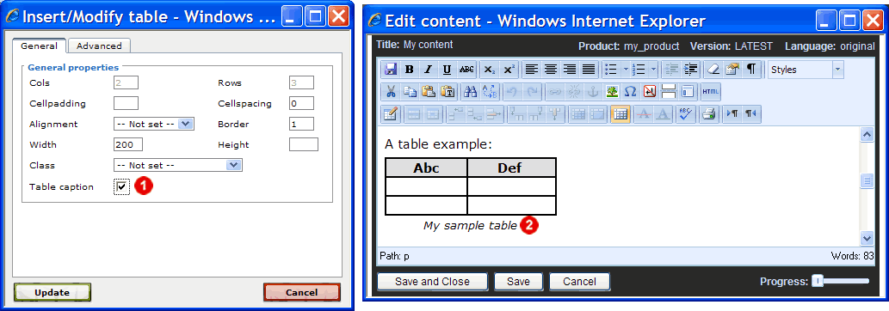
Figure 1.3.37. Adding a caption line to a table
For more information on editing tables see "Editing content" in the Reference Manual. Here are some of the supported features:
- Define width of columns.
- Control border-lines e.g. show only row lines or column lines.
- Set background color of table, row or cell.
- Apply user-defined styles on specific table-cells.
- Allow merging of cells.
- Control page-break in long tables.
- Display table title (caption line).
- Create links to tables.
- ... and more